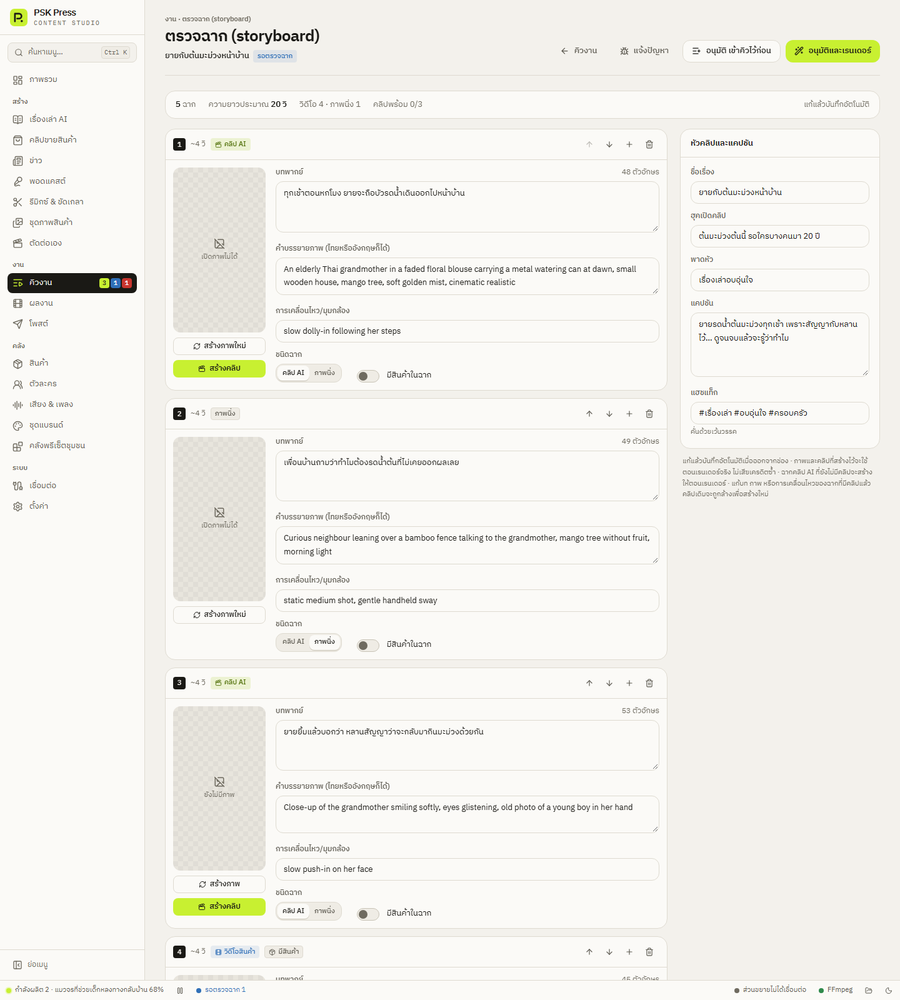

งาน
ตรวจฉาก (storyboard)
ดูและแก้บท ภาพ และคลิปทุกฉากก่อนสร้างจริง — ประหยัดเครดิต AI และได้คลิปตรงใจกว่า
งานที่เปิด ตรวจฉาก (storyboard) ก่อนสร้างจริง จะหยุดที่สถานะ รอตรวจฉาก หลังจาก AI วางบทและทำภาพตัวอย่างทุกฉาก เพื่อให้คุณตรวจก่อนสร้างเสียงและวิดีโอ งานที่ใช้คลิปแบบ “คลิปล้วน” ก็จะหยุดที่หน้านี้เช่นกัน เมื่อบางฉากทำคลิปไม่สำเร็จ
เปิดได้จาก:
- คิวงาน → เปิดตรวจฉาก
- ภาพรวม → กล่องต้องจัดการ → ตรวจฉาก →
- แจ้งเตือนบนเดสก์ท็อป


แถบสรุป
บอกจำนวนฉาก ความยาวประมาณ จำนวนฉากวิดีโอและภาพนิ่ง จำนวนคลิปที่พร้อมแล้ว และคลิปที่ไม่สำเร็จ ด้านขวาบอกสถานะการบันทึก ทุกการแก้บันทึกอัตโนมัติ
การ์ดฉาก
หัวการ์ดแสดงหมายเลขฉาก ความยาวโดยประมาณ และป้ายชนิด:
- คลิป AI — ยังไม่มีคลิป
- มีคลิปแล้ว
- คลิปไม่สำเร็จ — พร้อมเหตุผล
- ภาพนิ่ง
- วิดีโอสินค้า
ปุ่มมุมขวาของการ์ด: เลื่อนขึ้น เลื่อนลง แทรกฉากต่อจากนี้ ลบฉาก (ลบแล้วกดเลิกทำได้)
ช่องที่แก้ได้
- บทพากย์ — มีตัวนับตัวอักษร ห้ามเว้นว่าง
- คำบรรยายภาพ (ไทยหรืออังกฤษก็ได้) — สิ่งที่อยู่ในภาพ
- การเคลื่อนไหว/มุมกล้อง — สำหรับคลิป เช่น “slow dolly-in following her steps”
- ชนิดฉาก — คลิป AI / ภาพนิ่ง / วิดีโอสินค้า (เลือกวิดีโอสินค้าที่ใช้ได้)
- มีสินค้าในฉาก — บอกให้แอปแนบรูปสินค้าเป็นต้นแบบของฉากนี้
ภาพและคลิป
- สร้างภาพใหม่ — วาดภาพนิ่งใหม่จากคำบรรยายภาพ
- สร้างคลิป / สร้างคลิปใหม่ — ทำคลิปของฉากนี้เลย เพื่อดูก่อนเรนเดอร์ ใช้เครดิต Flow และเวลา 1–3 นาที เล่นคลิปได้ในการ์ด
แผ่นสตอรี่บอร์ด
งานคลิปขายสินค้าแบบแผ่น จะจัดฉากเป็นกลุ่ม แผ่นที่ N (ช็อต a–b · 1 คลิป) แต่ละช็อตมีช่องเพิ่ม:
- การกระทำ (อารมณ์ · สายตา · สินค้าทำอะไร)
- มุมกล้อง
- แสง
แต่ละแผ่นมีปุ่ม:
- วาดแผ่นใหม่ — วาดภาพแผ่นสตอรี่บอร์ดใหม่จากบทปัจจุบัน
- สร้างคลิปใหม่ — ทำคลิปของแผ่นนี้ใหม่
แก้บท การกระทำ มุมกล้อง แสง หรือภาพของช็อตในแผ่นไหน แผ่นและคลิปนั้นจะถูกทำใหม่ตอนเรนเดอร์ ตรวจความยาวบทพูดด้วย: บททั้งแผ่นควรพูดจบในเวลาคลิป (8 วินาที ≈ 58–72 ตัวอักษร) ถ้ายาวเกิน คำพูดจะถูกตัดหรือเร็วเกินไป
หัวคลิปและแคปชัน
แผงด้านขวาแก้ได้ก่อนเรนเดอร์:
- ชื่อเรื่อง
- ฮุคเปิดคลิป
- พาดหัว
- แคปชัน
- แฮชแท็ก — คั่นด้วยเว้นวรรค
อนุมัติ
- อนุมัติและเรนเดอร์ — ทำส่วนที่เหลือต่อทันที
- อนุมัติ เข้าคิวไว้ก่อน — อนุมัติแล้วเก็บเข้าคิว ยังไม่เริ่มเรนเดอร์
ภาพนิ่งและคลิปที่ทำไว้แล้วจะถูกใช้ตอนเรนเดอร์ ไม่เสียเครดิตซ้ำ ถ้ายังมีฉากหรือแผ่นที่ยังไม่มีคลิป แอปจะถามก่อน (“ฉาก/แผ่น N ยังไม่มีคลิป”) → อนุมัติต่อ (แอปจะทำคลิปตอนเรนเดอร์) หรือ กลับไปแก้
งานที่ไม่ได้อยู่ในสถานะรอตรวจแล้ว จะเปิดหน้านี้ได้แบบ ดูได้อย่างเดียว
เคล็ดลับ
- อ่านบทออกเสียงดูสักรอบ ถ้าพูดไม่ทันในเวลาคลิป ให้ตัดคำ
- ใช้ สร้างคลิป กับฉากหรือแผ่นแรกก่อน ถ้าผลดีค่อยอนุมัติทั้งงาน
- ถ้า Flow ปฏิเสธซ้ำ ลองเปลี่ยนโมเดลในงานใหม่เป็น Veo 3.1 - Fast หรือแก้คำบรรยายภาพให้ไม่เน้นหน้าคน